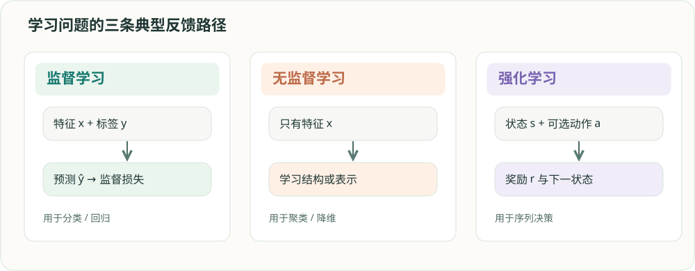
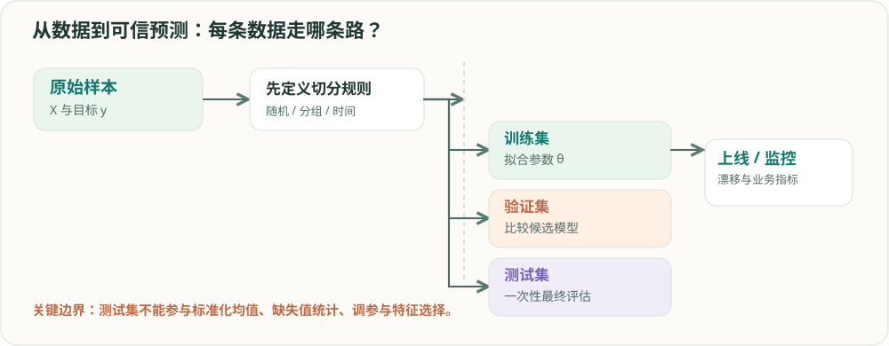

机器学习究竟在学习什么？
从规则到经验风险，再到可信的泛化评估：机器学习并不是记住训练集，而是在限定数据条件下学习对未知样本有效的预测规则。
01 · 规则与经验
设想识别垃圾邮件。显式编程可以写下“出现某种词就拦截”，机器学习则从样本中估计预测函数 fθ(x)。输入 x 是邮件特征向量，θ 是待学习参数，输出可以是类别、连续值或分数。训练样本写作 D={(x₁,y₁),…,(xₙ,yₙ)}。这里最重要的前提是：样本的产生方式能在一定程度上代表之后将遇到的任务。
人工智能包含显式规则、搜索和机器学习等不同方法；深度学习通常指使用多层神经网络的机器学习方法。它们不是互斥的业务场景。深度网络也可以用于分类、回归或从无标签数据学习表示。
02 · 三种学习反馈
监督学习得到输入和目标标签，用损失比较预测与真值；无监督学习通常没有目标标签，通过聚类、降维等目标寻找结构；强化学习通过环境状态、动作和奖励组成的时间序列学习策略。分类器输出分数不自动等于校准概率，聚类结果也不自动代表真实的社会或自然类别。

自监督学习可以使用原始数据自动构造预测目标，例如遮住一个词再猜测它。它没有要求人工提供每条标签，因此通常从数据标注角度单独讨论。不同范式还能在同一个系统中组合。
03 · 损失与泛化
所谓“学习”，经常可以写成最小化训练样本的平均损失。ℓ 衡量预测相对标签的代价，训练通过参数搜索降低这一代价；正则化、先验或其他约束决定模型能否将训练数据之外的结构也概括出来。
式中 n 是训练样本数。训练误差小并不保证泛化误差小：如果模型背下噪声，训练表现可能几乎完美，新的样本却频繁预测失败。模型在应用场景的表现也依赖标签质量、数据分布与特征的产生时间。
04 · 训练验证测试为什么分开
训练集用于学习参数，验证集用于模型选择、超参数比较，测试集仅在设计冻结后评估一次。随机样本可随机切分，但同一人的多条记录可能需要分组切分；预测未来则通常需要时间切分。交叉验证在训练数据内部轮换训练与验证折，不能代替最终独立测试。

如果先在全部样本上拟合标准化器、填充器或特征选择器，再拆训练和测试，测试数据的信息就进入了训练流程。更微妙的泄漏出现在标签定义、未来特征或重复主体穿越切分边界时。
05 · 复现一个最小分类流程
以下使用 scikit-learn 内置鸢尾花数据，固定随机种子、按类别分层切分，将标准化器放进 Pipeline。它是流程练习，不是对任何模型精度的保证。
from sklearn.datasets import load_iris
from sklearn.model_selection import train_test_split
from sklearn.pipeline import make_pipeline
from sklearn.preprocessing import StandardScaler
from sklearn.linear_model import LogisticRegression
from sklearn.metrics import accuracy_score
X, y = load_iris(return_X_y=True)
Xtr, Xte, ytr, yte = train_test_split(
X, y, test_size=0.2, stratify=y, random_state=42
)
model = make_pipeline(StandardScaler(), LogisticRegression(max_iter=1000))
model.fit(Xtr, ytr)
pred = model.predict(Xte)
print('shape:', Xtr.shape, Xte.shape)
print('held-out accuracy:', accuracy_score(yte, pred))
assert len(pred) == len(yte)依赖 Python 3.10+、NumPy、scikit-learn。stratify 不适合所有时间序列和分组任务。请检查测试集大小、类别分布以及多次切分的稳定性，而不是把一次准确率当作真实环境的结论。
06 · 理解边界与下一步
在类别极不平衡时，“永远预测多数类”也可能有很高准确率，此时应检查召回、精确率与业务错误成本；数据随时间变化时还要监测漂移。使用机器学习前先问三个问题：输入是否在预测时可用？标签是否可靠？评价指标是否对应真实目标？
下一步需要理解把样本排列成矩阵后，模型如何对整批数据施加变换。